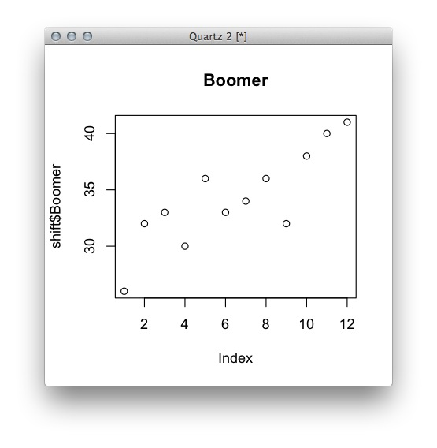
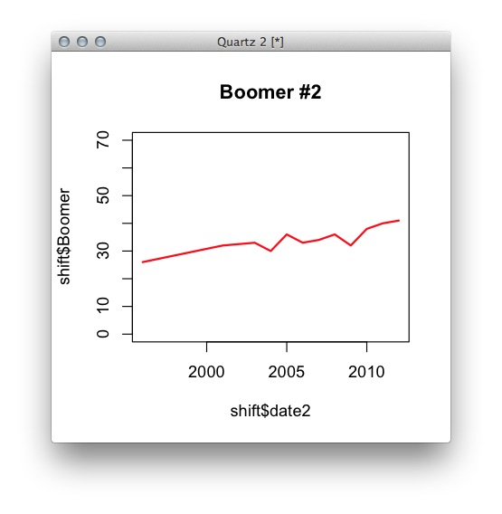
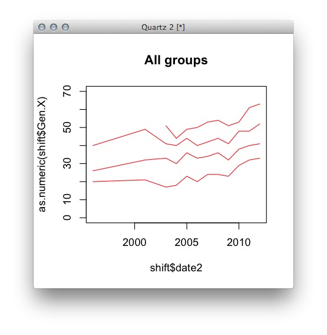
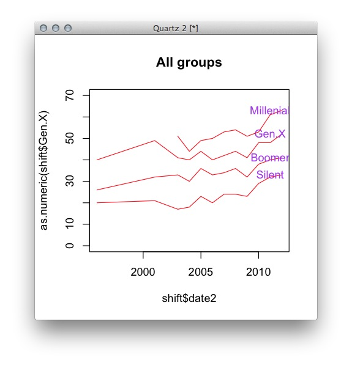
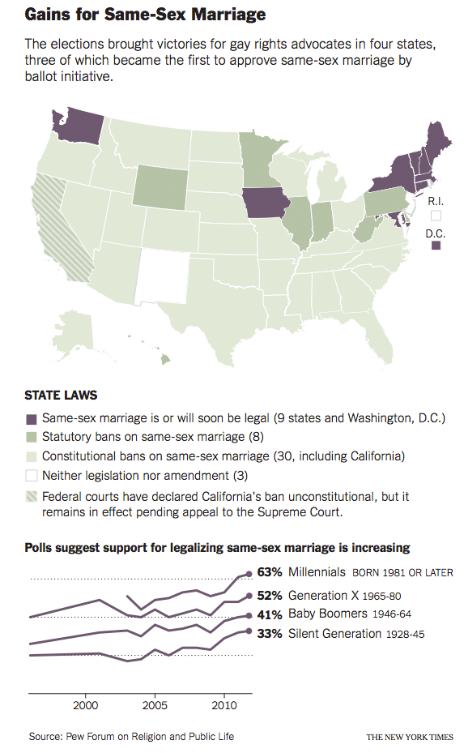

In this example. we'll use R to format and visualize Americans' views about same-sex marriage in light of a string of court victories for advocates of same-sex marriage. We'll specifically learn about data frames, vectors and basic plotting.
R can read pretty much any kind of structured information you have, and in many cases it's an Excel spreadsheet or an output from a spreadsheet. Download and save generational-shift.txt to your "data" folder and type load it into your R console. (The numbers here indicate percent of each demographic supporting same-sex marriage at a particular date.)
shift <- read.delim("data/generational-shift.txt")
Mess around with this data a little bit to get a feel for the syntax.
dim(shift) #[1] 12 5
ncol(shift) # 5
nrow(shift) # 12
class(shift) # "data.frame"
shift$Boomer # 26 32 33 30 36 33 34 36 32 38 40 41
shift[1:2,]
Take a look at shift$date. What class is it? What class might we want it to be?
R can be smart about dates if we ask it to be. But to do that we need to tell it what format our dates are in. Type as.Date(shift$date) in the console. What does that look like? It looks like we need to change the format a little. Let's look at the R documentation for dates by typing ?as.Date in the console. Note the line from the help window.
Make a new date field called date2:
shift$date2 <- as.Date(shift$date,format="%m/%d/%Y")
Now take a look at the data frame in your console. Let's make a chart of the Boomer attitude over time:
plot(shift$Boomer,main="Boomer")

Done! Well, maybe not. That's not bad, but what's wrong with this plot? Look at the docs for plot (?plot) and see how we could improve this.
plot(shift$date2,shift$Boomer,main="Boomer #2",ylim=c(0,70),type="l",lwd=2,col="red")

This is much better, but what if we want to see all the data on the same plot? Try using the same code to plot the other fields. What happens? Let's put all the lines on the same plot using the lines command.
plot(shift$date2,as.numeric(shift$Gen.X),type='l',ylim=c(0,70),main="All groups",col='red')
lines(shift$date2[3:nrow(shift)],shift$Millennial[3:nrow(shift)],col="red")
lines(shift$date2,shift$Boomer,col="red")
lines(shift$date2,shift$Silent,col="red")

What's different about the plot command for the Millenial group? If we didn't do it that way, what other ways might we visualize this correctly? How else might this chart be improved? Here's a final version with labels included using the text command, which behaves much like our lines command.
plot(shift$date2,as.numeric(shift$Gen.X),type='l',ylim=c(0,70),main="All groups",col='red')
text(as.Date("2011-01-01"),shift$Gen.X[nrow(shift)],label="Gen.X",col="purple")
lines(shift$date2[3:nrow(shift)],shift$Millennial[3:nrow(shift)],col="red")
text(as.Date("2011-01-01"),shift$Millennial[nrow(shift)],label="Millenial",col="purple")
lines(shift$date2,shift$Boomer,col="red")
text(as.Date("2011-01-01"),shift$Boomer[nrow(shift)],label="Boomer",col="purple")
lines(shift$date2,shift$Silent,col="red")
text(as.Date("2011-01-01"),shift$Silent[nrow(shift)],label="Silent",col="purple")

This isn't the most efficient way to do this; we're repeating ourselves a lot here, which is always a bad sign, but if you needed to get something up immediately, this is absolutely acceptable. (Also, the colors here are not so great, but the silly colors will help us select things quickly later, in postproduction.)
Here's how it looked in print:
Let's move on to an example with a little more data work before the payoff. Lesson 2: Plotting the history of single-party statehouses